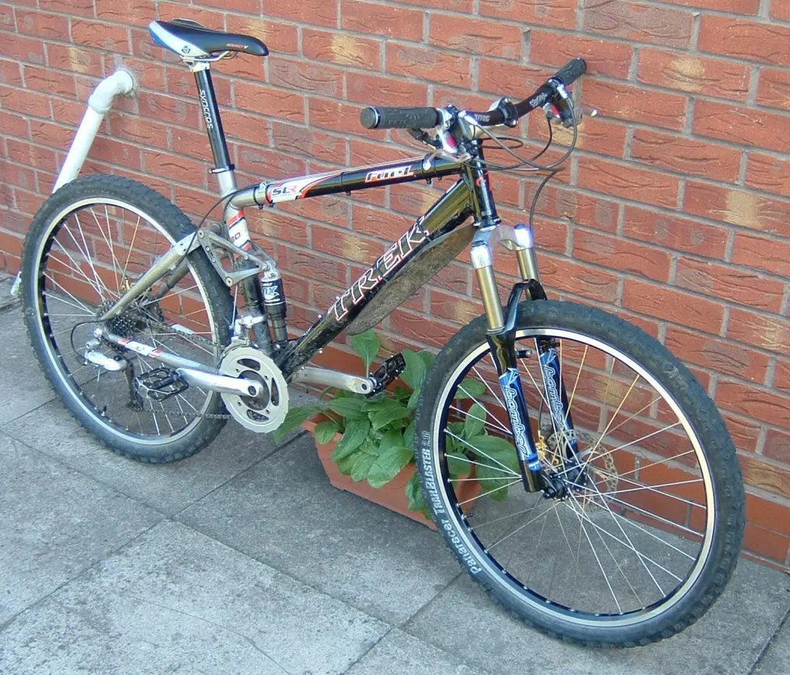

Тип велосипеда
Горный велосипед (МТБ)
Mountain bike (MTB)
Велосипед для бездорожья: широкие шины, подвеска, мощные тормоза.
Хардтейл (hardtail) имеет только переднюю амортизационную вилку, двухподвес (full suspension) — ещё и задний амортизатор. Колёса 29" и 27,5" (раньше — 26"), шины 2,2–2,6", дисковые гидравлические тормоза, трансмиссия чаще всего 1×12.
Дисциплины: кросс-кантри (XC, ход 100–120 мм), трейл (120–150 мм), эндуро (150–180 мм), скоростной спуск (DH, около 200 мм), дёрт и фрирайд. Первым серийным горным велосипедом считают Specialized Stumpjumper 1981 года.
Отличительные черты
- Колёса 29" / 27,5"
- Ход подвески 100–200 мм
- Дисковые тормоза
- Дропер-штырь на трейл/эндуро
Уход
После грязных поездок мойте и смазывайте цепь, протирайте стаканы вилки, следите за износом колодок и обслуживанием подвески.
